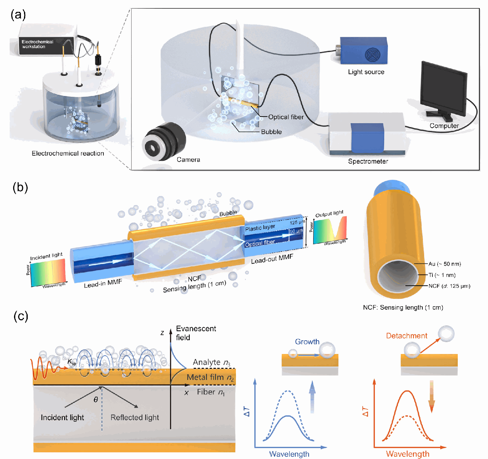

气泡覆盖 → 光信号变化 → 图像标定 → 气泡信息
英语阅读策略 · 科普阅读分析读懂一篇研究，
读懂一篇研究，
讲清一个发现。
从论文到一段好读的中英文科普。
讲清研究人员怎么做，让专业知识有迹可循。
适用于武汉理工大学《英语阅读策略》课程科普阅读分析活动 · 非学校官方产品
选文
找到有故事的真实研究
读懂
理清方法与信息来源
分享
中英文短文与原文配图
交流
一句具体、自然的回复
从真实定稿出发
Nano Research · 2025一根光纤，读懂小气泡。
保留方法的关键过程，把复杂术语留给需要深入阅读的人。

原文图1：装置、光纤结构与检测原理。
Wei 等，2025 · 查看原文 ↗
© The Author(s) 2025 · CC BY 4.0
少一点术语，
多一点“怎样做到”。
把过程讲明白传感器放在哪里，读到了什么，怎样从信号得到信息。
把证据留完整数字、结论和图片都回到原文；观察、推算和预测各有边界。
把篇幅留给重点默认约90—130词英文、150—230字中文；按当次活动要求调整。
下次分享，从这里开始
下载 Skill ZIP ↓装好技能，带上你的论文。
一次安装，反复使用
- 下载 ZIP，解压得到
whut-science-reading文件夹。 - 将整个文件夹放入
~/.codex/skills/。 - 在 Codex 新建对话，输入
$whut-science-reading，附上论文或需求。
Skill 在 Codex 中执行任务。此网页提供示例、安装包和提示词；不会上传文件或调用模型。